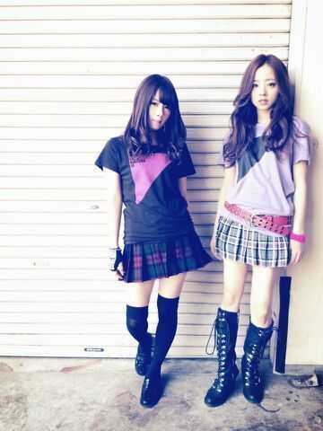
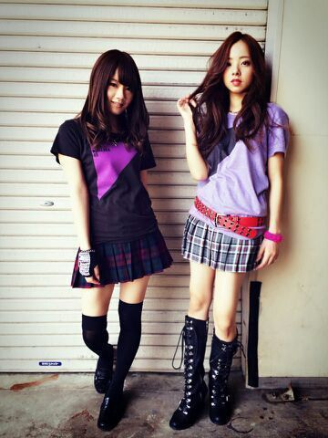

| 2014/07 16 Wed | 〜卵の話〜自分ウソでしょ!? ( ゜ω゜;/)/ ろってぃ− |
\ おはようございます。/
このあいだ7/9に新曲『 夏のFree & Easy 』が発売られましたが、もうCD聴いたよ〜見たよ〜!!って方どの位いますかね(/-＼*)？
まひろは タイプ(C)のジャケット写真にちゃんと写ってますよ〜.♪ 中身も見てくれかな？
ソロカットがあるのですが、その時撮った写真の内の１枚がこちらです ..*

かっこよく撮ってもらえてたので良かったです.わ〜い\*´`*/
話かわりますが、、、
今朝、間違って、寝ぼけてて、
携帯画面の上で卵を割ってしまいました。
とんだことをしてしまった〜
卵の中身が 「ぷしゃ〜〜〜」と、、、ね
広がらんかったよ。v(・∀・*)
だって、ゆで玉子やから.
これが生卵やったらやばかったですよね
冷蔵庫の中に 生卵３つと、ゆで玉子1つがあったんですよ♪
そして、卵の話は続きますけど、
この前 せいらりんと2人で買い物に行ったんですね、
で、卵たちを見てて
「ぃゃ〜...1人で6個もいらんか〜」って何個いり買えばいいのかとか悩みながら、 らりんの買い物かごを見たら 12個いりの卵がドーンと堂々とおったんですよ。
その卵を目にした瞬間、少しの間ができて
「・・・上には上がおる。」って言われた 笑
ちょっと面白かった 笑
以上。v(・∀・*)

いい感じ. せいたんと..*

のし。
コメント(201)
2014/07/16 11:48